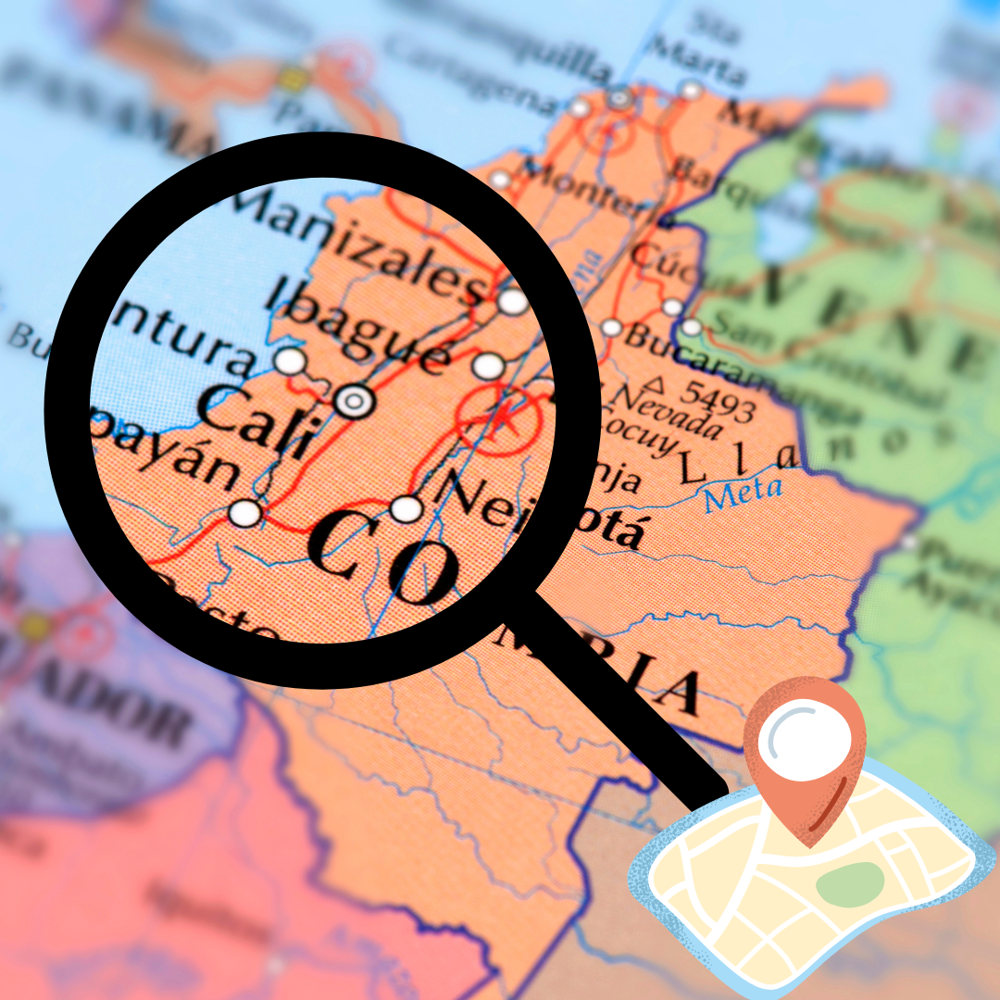

Santiago de Cali
Distrito Especial, Deportivo, Cultural, Turístico, Empresarial y de Servicios de Santiago de Cali
Datos de la ciudad
Departamento: Valle del Cauca
Lenguaje: español
Clima: cálido
Gentilicio: caleño/a
Fundación: 25 de julio de 1536
Actividades

Shows de salsa

Visitar el Zoológico

Caminar por el Boulevard

Visitar Cristo Rey
Gastronomía

Cholado
Empanadas

Marranitas

Lulada

Sancocho de gallina
Sitios de interés

Mapa turístico de la ciudad
10 Mejores sitios según Tripadvisor
- Cristo rey
- Barrio San Antonio
- Iglesia San Antonio
- Iglesia La Ermita
- Gato de Tejada
- Parque Artesanal de la Loma de la Cruz
- Mirador Sebastián de Belalcázar
- Plazoleta Jairo Varela
- Iglesia La Merced
- Iglesia San Francisco
Para más información visita este link